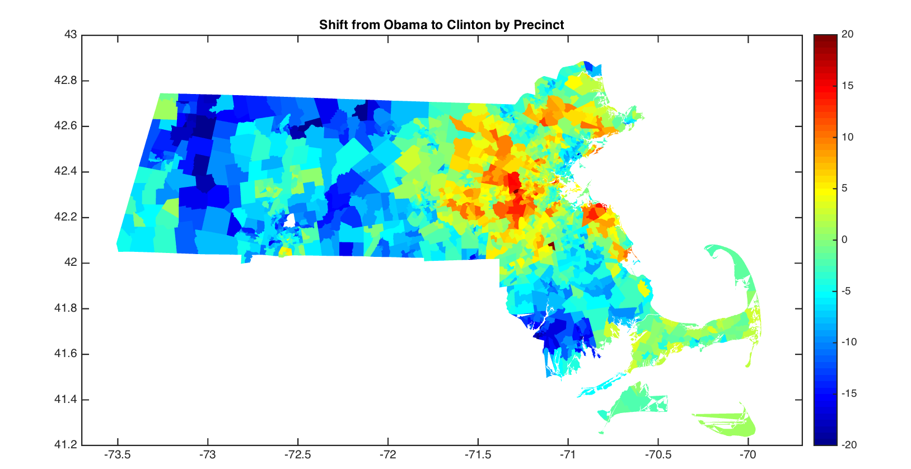

In Massachusetts, the election shift from 2012 to 2016 is almost entirely correlated to Education-level of precinct, or rather % population of each precinct was non-college educated. The R2between the 2012 result and 2016 was 0.81, adding a variable for whites w/o no college degree brings the R2 to 0.95, adding in a variable for whites w/ a college degree to 0.96. Adding income did not improve the fit at all, and fitting against income but not education had a poorer fit than education. Typical recent state elections were closer to the 2012 election pattern rather than 2016; races such as governor or senate correlate very well with the 2012 presidential election ( R2 > 0.95), less so with this election. A best fit equation is shown here.
Clinton 2016 = 0.193 + 0.785(Obama 2012) - 0.252(% Whites w/o Degree) + 0.123(% Whites w/ Degree)
This implies at the same education level, places where Obama did very well had a smaller shift towards Clinton, because there were fewer Democrats to add (and more Democrats to lose). The clusters are based on just election results, but they end up following education and race rather neatly. Click on the 2012 and 2016 buttons to see the different shifts. Each of the k-means cluster stay distinct with respect to Education despite Education was not one fo the variable used to create the plots
In 2012, there was barely any correlateion with Education alone, controlling for race. R2 between the 2012 result and race alone was 0.53, adding in education only improved to 0.55, while combining household income improved the correlation 0.66. More educated places were somewhat more likely to vote Democratic, but richer places were somewhat more likely to vote Republican. Since education and income are strongly correlated, both demographic factors needed to be taken into an account. In 2016, education alone was sufficient that adding income gave little improvement to the demographic reggresion. The more affluent, educated dark brown areas and purple neighborhoods in particular voted less Republican than usual.
Here's a map of the shift; red is where Clinton did better than Obama. In 2012, Republicans had a bit of a home state boost from Mitt Romney; so you’d expect Trump to have a bit of a disadvantage compared to Romney; and Massachusetts was the only state in the Northeast and Midwest besides Illinois where Trump did worse than Romney.
